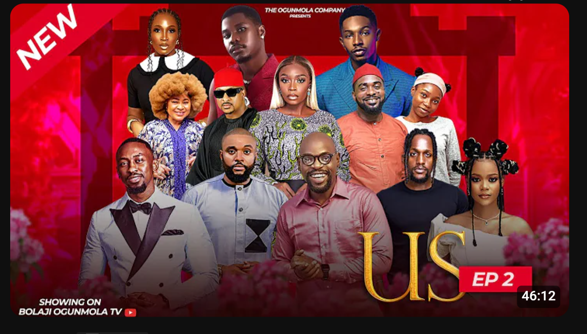

Nollywood
- LOVE IN EVERY WORD
- BENEATH THE FACADE
- WHILE HIS HEART BEATS
- US 
Producer : Omoni Oboli

Producer : Bolaji Ogunmola
Producer : Omoni Oboli
Producer : Bolaji Ogunmola
Producer : Omoni Oboli
Producer : Bolaji Ogunmola
Producer : Omoni Oboli
Producer : Bolaji Ogunmola
Producer : Othman Njaidi